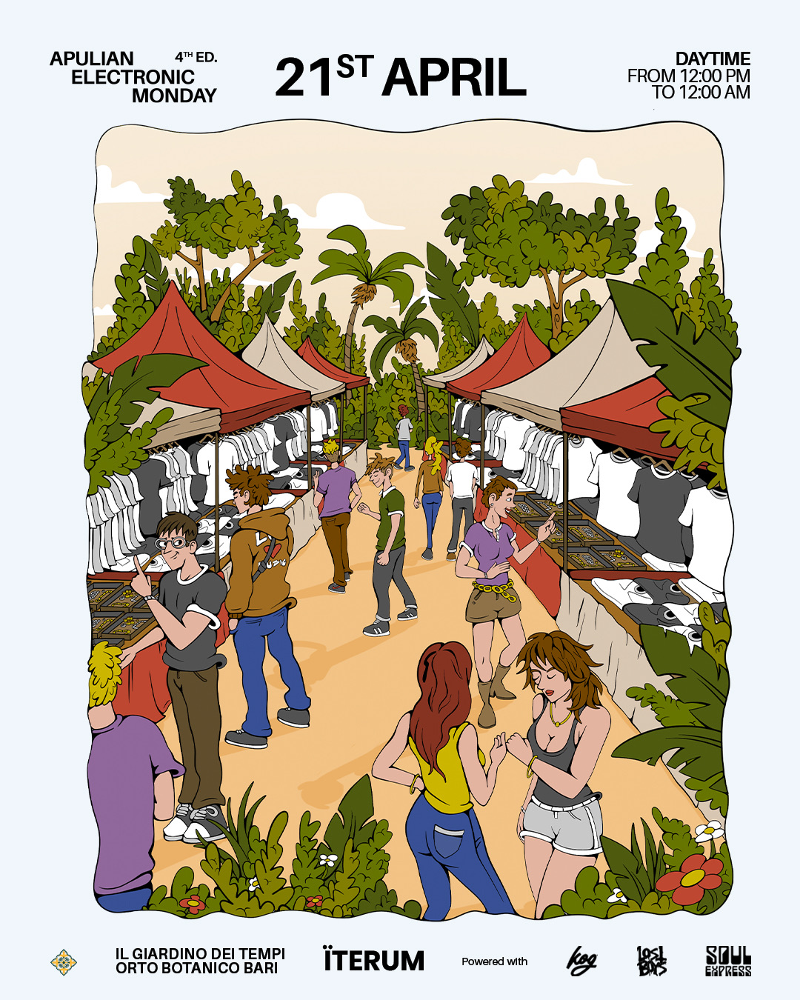
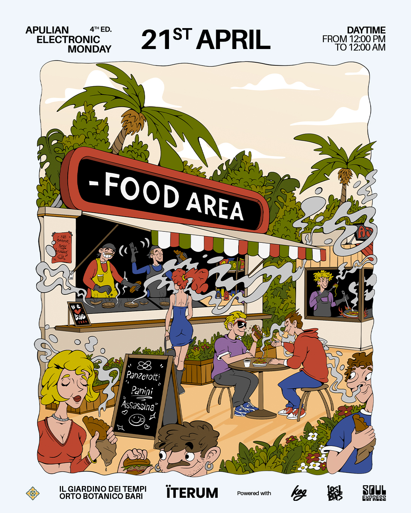
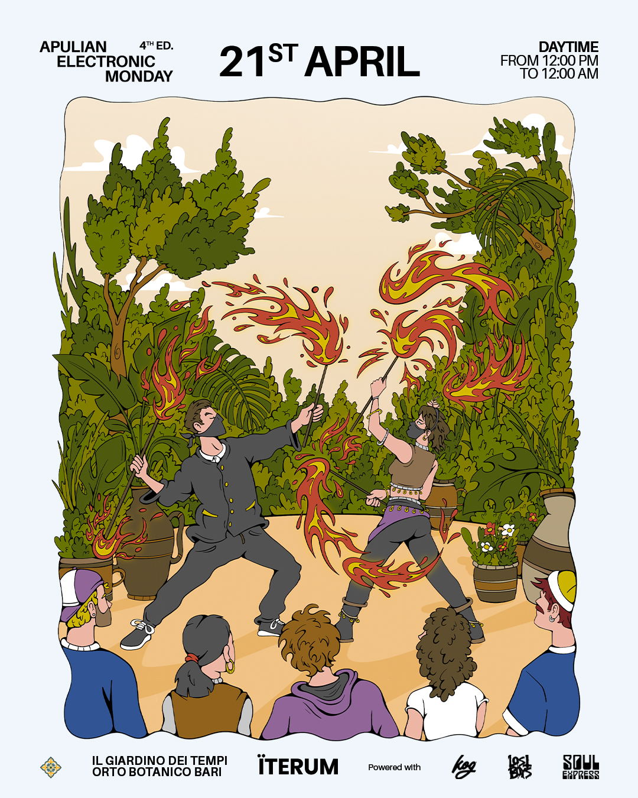
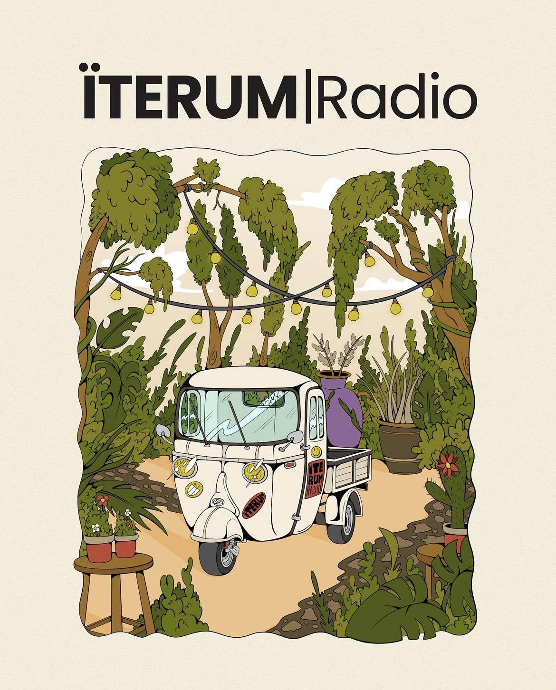
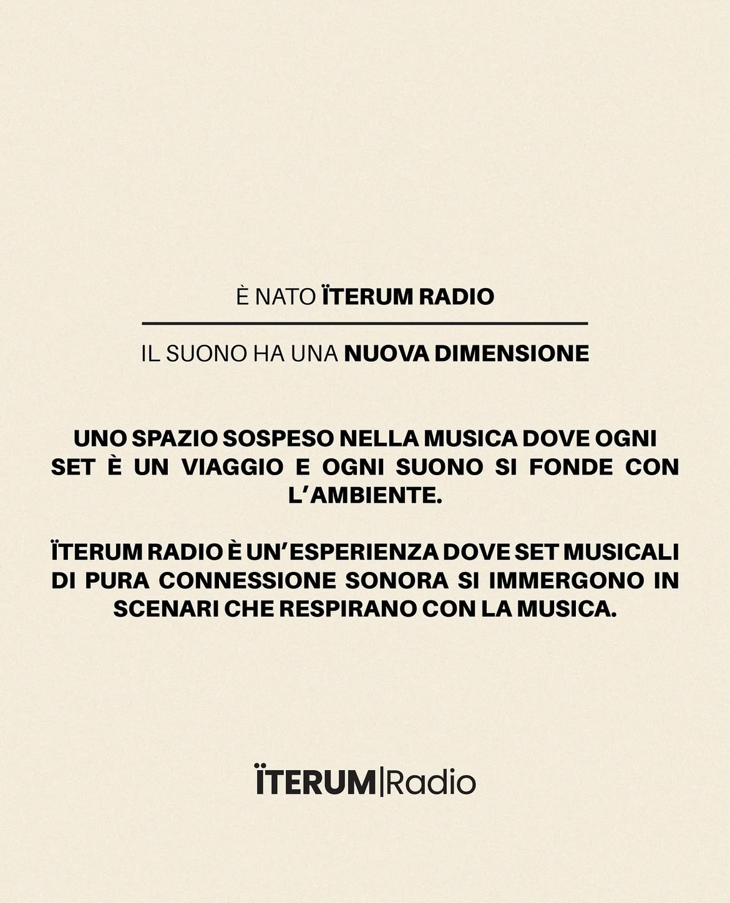

ÏTERUM Apulian Electronic Monday
ÏTERUM firma Apulian Electronic Monday, la giornata di musica elettronica open air che anima Il Giardino dei Tempi, l'Orto Botanico di Bari. Per la 4ª edizione ho illustrato tutto l'immaginario visivo dell'evento: una mappa isometrica che trasforma il giardino in un percorso da scoprire — tra Main Stage, Pagoda Techno, Area Market e il Maze — e le scene illustrate che raccontano cosa succede in ogni angolo, dalla food area al fuoco che chiude la serata.
Dalle 12 di mezzogiorno a mezzanotte, un'unica giornata disegnata a mano per orientare il pubblico tra i viali e, allo stesso tempo, raccontarne l'atmosfera.

Tre soste
lungo il percorso





ÏTERUM Radio
In parallelo alla mappa e alle illustrazioni di scena, ho curato l'identità visiva di ÏTERUM Radio, l'apecar che ha accompagnato la giornata: grafiche pensate per il palinsesto e per i contenuti social condivisi in tempo reale durante l'evento.
L’identità è stata quindi progettata per evolversi anche oltre l’evento, accompagnando ÏTERUM Radio nel suo percorso itinerante tra le diverse location della Puglia, con DJ set e appuntamenti musicali.
Illustrazione, wayfinding e social per festival?
Scrivimi per costruire insieme il prossimo mondo da esplorare.